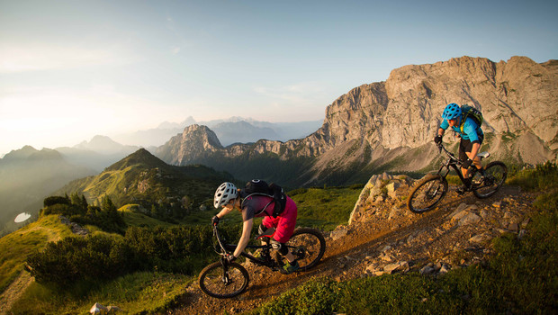

Montana's Glacier National Park Tours

If you've never visited this breathtaking region, a bike tour is the perfect way to go. Montana's Glacier National Park offers some of the most phenomenal scenery in the United States, at its very best when seen at your own pace, from the seat of a bike. Come join us for a trip of a lifetime!.Spot bighorn sheep, pikas and white-crowned sparrows | Hiking, biking, horseback riding and boating are some of the options today | Spin along the eastern perimeter of Glacier against a spectacular backdrop of meadows and mountains | Raft down the Middle Fork of the Flathead River with expert guides who provide a unique perspective on the flora and fauna along the way.
| Length: | 4 hours, about 15 miles |
| Skill Level: | Beginner to intermediate |
| Cost: | $140 per person or $120 per person with 2 or more people |
| Location: | Bozeman, Montana |